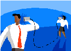

|

Page 14
One of the best ways to ensure someone that you are truly listening to what
they are saying is to intently listen. To some this may sound like common
sense, but it is a skill that is seldom mastered. Usually when engaged in a
conversation, the listener is multitasking. They are listening with one part of
the brain and preparing a response with the other. It is painfully obvious
when a person is not wholeheartedly interested in what someone else has to
say. Not only does this make the listener look uncaring, but it may also influence the speaker to go
elsewhere when he needs to speak about matters.
Whether you are in a leadership role or an individual contributor, strong listening skills are essential to
your success. Hearing something other than what is being said or trying to think of what to say while the
speaker is talking, can have dire consequences. Regardless of the industry you work in, focused listening
is a great skill to sharpen.
|